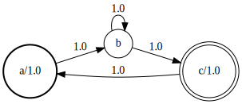

Finite State Machines
The MarkovModels package represents Markov chains as probabilistic a Finite State Machine (FSM). Here is an example of FSM as used by the package:

The thick line node indicates the starting state whereas the double line node indicates the ending states.
In the following, we present the tools provided by the package manipulate such FSM. All the examples below assume that you have already imported the MarkovModels.jl package by doing using MarkovModels.
Creating FSMs
FSMs are represented by the following structure:
MarkovModels.FSM — Typestruct FSM{T<:Semifield}
states # vector of states
links # Dict state -> vector of links
endProbabilistic finite state machine.
Our FSMs operate in the log-semifield where each number can be interpreted as a log-probability. The package provide the following type:
T = Float64
SF = LogSemifield{T}Then, too create an FSM object simply type:
fsm = FSM{SF}()When created, the FSM has only two states: the initial state and the final state. FSMs cannot have multiple initial for final states.
You can add states to the FSM by using the function addstate!:
s1 = addstate!(fsm, pdfindex = 1)
s2 = addstate!(fsm, pdfindex = 2, label = "a")
s3 = addstate!(fsm, label = "b")
s4 = addstate!(fsm)
Note that a state can be:
- emitting and labeled
- emitting only
- labeled only
- non-emitting and non-labeled (nil state)
You also need to define which state is a starting state and which one is an ending state (there can be several starting/ending states):
setinit!(s1)
setfinal!(s4)
The link! function add weighted arcs between states:
link!(fsm, s1, s1, SF(log(1/2)))
link!(fsm, s1, s2, SF(log(1/2)))
link!(fsm, s2, s3)
link!(fsm, s3, s4)
FSM operations
Composition
MarkovModels.compile — Functioncompile(fsm; allocator = spzeros)Compile fsm into a inference-friendly format CompiledFSM. allocator is a function analogous to zeros which creates an N-dimensional array and fills it with zero elements.
MarkovModels.determinize — Functiondeterminize(fsm)Determinize the FSM w.r.t. the state labels.
MarkovModels.gpu — Functiongpu(cfsm)Move the compiled fsm cfsm to GPU.
MarkovModels.minimize — Functionminimize(fsm)Return a minimal equivalent fsm.
MarkovModels.renormalize! — Functionrenormalize!(fsm)Ensure the that all the weights of all the outgoing arcs leaving a state sum up to 1.
Base.replace — Methodreplace(fsm, subfsms)Replace the state in fsm wiht a sub-fsm from subfsms. The pairing is done with label of the state, i.e. the state with label l will be replaced by subfsms[l]. States that don't have matching labels are left untouched.
Base.transpose — Functiontranspose(fsm)Reverse the direction of the arcs.